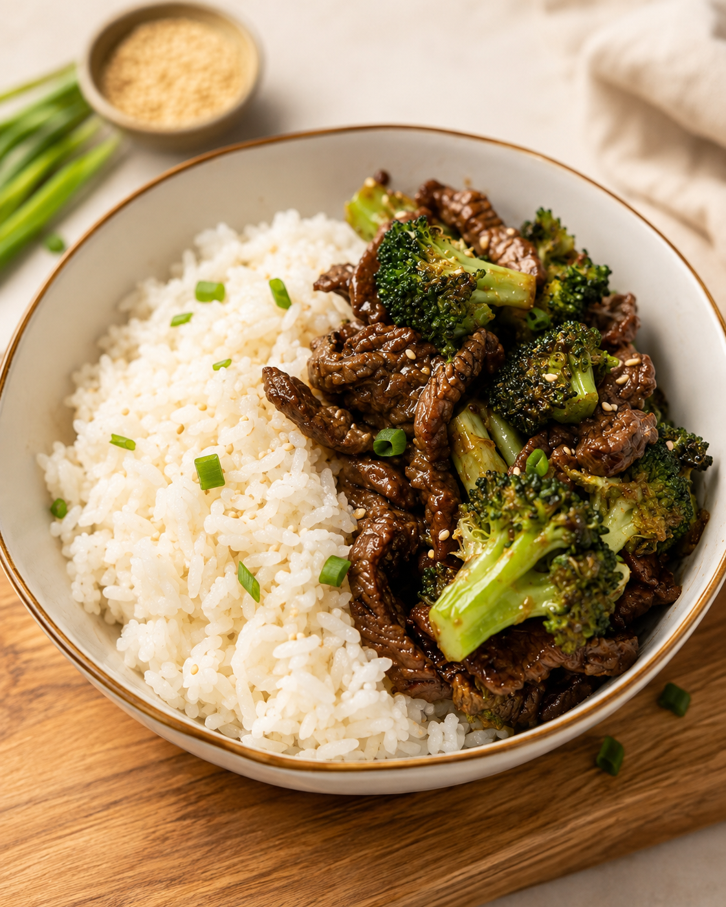

From the kitchen
Teriyaki beef & rice bowls
A short-ingredient-list recovery bowl that reheats like a dream

Why this one's in heavy rotation
This is the recipe I reach for when I want a good post-run meal without a long ingredient list. It keeps things simple, plenty of carbs to refill what a run burned through, plenty of protein to help the muscles recover, and it comes together in one skillet with barely any cleanup. It's also one of those rare meals that tastes just as good, if not better, on day three of leftovers, which makes it a strong pick for weekly meal prep.
Why it works for runners
- ~38–42g protein for muscle repair and recovery
- Rice provides easy-to-digest carbohydrates for replenishing glycogen
- Lean beef supplies protein, iron, zinc, and vitamin B12
- Broccoli adds vitamin C, potassium, fiber, and antioxidants
- A little teriyaki sauce provides both flavor and some sodium, which can be useful after a sweaty workout
Ingredients (4 servings)
- 1½ lbs flank or sirloin steak, thinly sliced against the grain
- 3 cups cooked jasmine or white rice
- 4 cups broccoli florets
- 3 tbsp low-sodium soy sauce
- 2 tbsp honey
- Garlic salt, to taste
- 1 tbsp olive oil
- 1 tbsp sesame seeds (optional)
- 2 green onions, sliced (optional)
Instructions
- Cook the rice according to the package directions.
- Heat olive oil in a large skillet or wok over medium-high heat. Working in batches so the pan stays hot, sear the sliced beef for 1 to 2 minutes per side until browned. It doesn't need to be fully cooked through yet, it'll finish in the sauce. Remove and set aside.
- While the beef cooks, steam the broccoli for about 4–5 minutes, leaving it slightly crisp rather than cooking it until soft. (See note below for a baked option.)
- In the same skillet, whisk together the soy sauce, honey, and garlic salt. Bring to a simmer and let it reduce slightly for a minute or two.
- Return the beef to the pan and toss to coat, simmering for another 2–3 minutes until the sauce thickens and clings to the meat.
- Divide the rice between four bowls. Add the teriyaki beef and broccoli, then finish with green onion and sesame seeds if desired.
Personal notes
- Skipped the ginger. The original version calls for a teaspoon of ground ginger, I've left it out and honestly don't miss it. Add it back in if you want a little more warmth to the sauce.
- Garlic salt over fresh garlic. Swap in garlic salt to taste instead of minced garlic. It blends right into the sauce and cuts a step out of prep.
- Baked broccoli works too. If you'd rather not stand over the stove, toss the florets with a little olive oil and roast at 400°F for about 20 minutes instead of steaming. It comes out with slightly crispy edges, which I actually prefer.
Approximate nutrition (per serving)
- Calories: ~570
- Protein: 40g
- Carbohydrates: 60g
- Fat: 18g
For a long-run or high-mileage day, bump the rice up to about 1¼–1½ cups cooked per serving. For an easier training day, stick with the normal portion and add extra broccoli.
Meal-prep tip
This is especially good for batch cooking, beef and rice hold up better to reheating than a lot of chicken or fish dishes do. Divide everything into four containers while it's still fresh and refrigerate for up to 4 days. Slightly undercook the broccoli during prep so it doesn't turn mushy when reheated, and add a teaspoon of water to the rice before microwaving to help restore its texture.
Real talk: I can run a 5K faster than I can plate a bowl of food. My kitchen lighting is criminal, so this photo got a little AI glow-up before hitting the page. The recipe, the notes above, and the numbers are all real — I just haven't figured out how to get AI to shave time off my splits yet. Working on it.